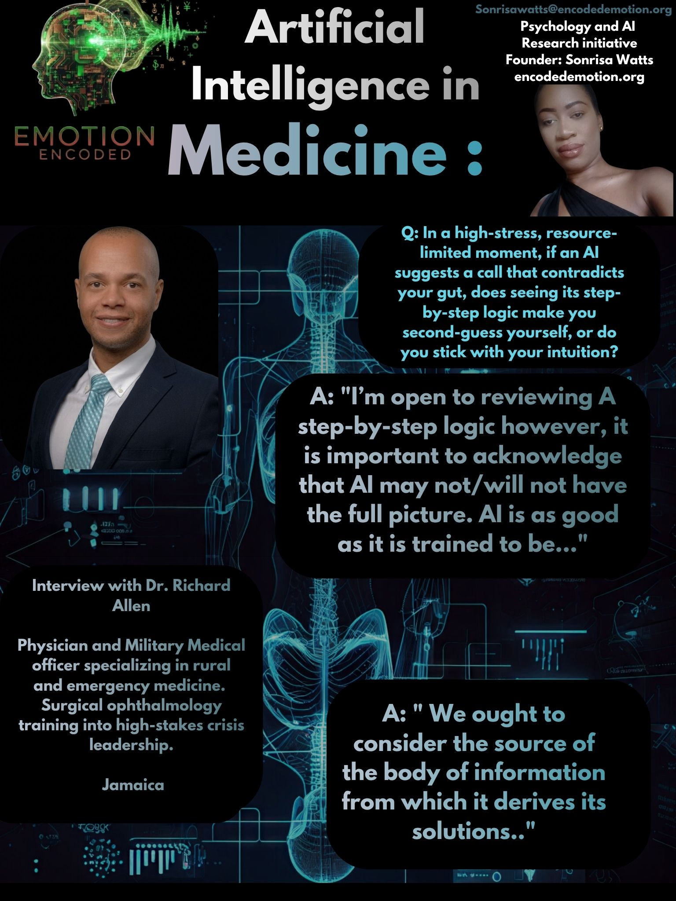

Dr. Richard Allen is a Captain, Military Medical Officer, and Specialist in Rural, Remote & Austere Medicine with foundational training in surgical ophthalmology. Operating in high-stress, resource-limited environments where clinical choices carry immediate consequences, Dr. Allen’s field responses establish key boundary conditions for how machine intelligence can and cannot be integrated into regional clinical practice.
A critical question in clinical decision support systems is how clinicians calibrate trust when algorithmic logic conflicts with clinical intuition during high-stakes care. Dr. Allen highlights that while reviewing an AI’s step-by-step logic can be valuable, machine outputs must be evaluated against systemic constraints and training limitations:
Q: In a high-stress, resource-limited moment, if an AI suggests a call that contradicts your gut, does seeing its step-by-step logic make you second-guess yourself, or do you stick with your intuition?
Dr. Richard Allen: "Guard rails are important, patient safety is paramount. I’m open to reviewing a step-by-step logic however, it is important to acknowledge that AI may not/will not have the full picture. AI is as good as it is trained to be. We ought to consider the source of the body of information from which it derives its solutions."
This response underlines the necessity of epistemic vigilance when deploying algorithmic tools in austere environments. Rather than viewing AI as an authoritative diagnostic oracle, Dr. Allen treats machine suggestions as probabilistic outputs that must be vetted against the dataset's training origin and the real-time clinical context.
While rapid visual overlays are frequently proposed for high-acuity digital health tools, Dr. Allen stresses the primacy of explicit analytical breakdowns over simplified visual cues when evaluating recommendations in critical moments:
Q: In a fast-moving crisis, would you prefer the AI to show you a quick visual status overlay or a written breakdown of its logic?
Dr. Richard Allen: "A break-down is always important."
In acute medical scenarios, speed alone does not replace clinical safety. Dr. Allen's emphasis on a written breakdown highlights that clinicians require transparent, interpretable logic to validate an AI's reasoning, ensuring that rapid decision-making remains grounded in verifiable clinical rationale rather than opaque visual indicators.
When shift fatigue and cognitive load peak in austere medical settings, Dr. Allen rejects blind reliance, prioritizing patient safety through double-checking and clinical verification:
Q: At the end of a long shift in the field, if an AI flags a sudden warning, do you double-check your work or trust your gut?
Dr. Richard Allen: "Patient safety and doing right by the patient is the goal. No harm in double-checking."
Even under extreme cognitive strain, Dr. Allen demonstrates that automation bias can be actively mitigated by maintaining a low threshold for clinical verification. An AI alert serves not as a directive to follow blindly, but as a prompt to trigger a final safety check before taking action.
Sonrisa Watts // Emotion Encoded // 2026